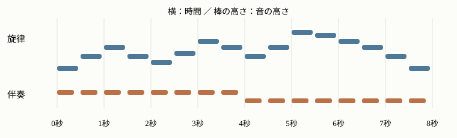

分野・タスクから知る · Speech, Audio and Music
音声・音楽
話し声から文字へ、文章から音声や音楽へ、混ざった曲から一つの音へ。入力と出力を、短い試聴デモで比べます。
音声・音楽のタスク
音声・音楽の研究には、言葉の認識、音の生成、音源の分離などがあります。
音声認識
音声認識（ASR）は、話された言葉を文字にします。会議の文字起こしや字幕に使われます。
入力：短い案内
対応する文章（例）
明日の会議は、午後三時からです。
Whisperなどが代表例です。雑音の中でも正確に聞き取ることや、多言語への対応が研究されています。
音声合成
音声合成（TTS）は、文章から話し声を作ります。発音だけでなく、抑揚や間の取り方も自然にすることが研究されています。Tacotron 2の合成音声と、同じ文章を人が読んだ録音の例です。
入力：George Washington was the first President of the United States.
（ジョージ・ワシントンはアメリカ合衆国の初代大統領でした。）
合成音声：Tacotron 2
人の音声：録音
音楽生成
音楽生成は、楽器や雰囲気の説明から曲を作ります。以下はMusicGenの生成例です。
① ダンス系の曲
指示（要約）：南国風の打楽器と、覚えやすい旋律を持つ明るいダンスポップ。
② オーケストラの曲
指示（要約）：力強い打楽器、金管と弦楽器を使った、英雄的な戦いを思わせる壮大な曲。
指示に合う曲を作ることや、長い曲の展開を自然につなぐことが研究されています。
音源分離
音源分離は、混ざった音から歌声や楽器を取り出します。下のデモは、曲全体・旋律・伴奏の対応を示しています。

旋律と伴奏の音の配置。
聞き比べ：再生中に切り替えると、同じ位置から別の音を聞けます。
曲全体：旋律と伴奏が重なっています。
分離の目標を聞くデモ：混合前の旋律・伴奏を切り替えています。
Demucsなどは、重なった歌声や楽器を推定して分けます。他の音の混入や、取り出した音の欠けを減らすことが研究されています。
研究例：Demucsの分離結果
Demucsの研究では、波形とスペクトログラムを組み合わせるなどして楽曲を分離します。教材の切り替えデモと違い、混合音だけから各音源を推定した結果です。著者の試聴例では、他音源の漏れと、取り出した音の歪みに耳を向けます。
波形とスペクトログラム
音声認識や音源分離のモデルは、音を数値として扱います。その代表的な表し方が波形とスペクトログラムです。下の図は、同じ8秒の曲をそれぞれの形式で表したものです。
波形
音を時間ごとの振幅で表したものです。音が強く出るタイミングや、振動の様子が分かります。
{kind=link}
上：曲全体の波形。下：40ミリ秒の拡大。 画像を拡大 ↗
スペクトログラム
音を短く区切って周波数成分を調べ、強さを色で表します。横は時間、縦は周波数で、明るいほどその成分が強いことを示します。
{kind=link}
同じ曲から計算。低い位置に伴奏、中央に上下する旋律、その上に倍音が見える。 画像を拡大 ↗
波形では重なって見える音も、周波数ごとに分けると高さや音色の特徴を捉えやすくなります。そのため、音声認識や音源分離などのモデルへの入力に使われます。